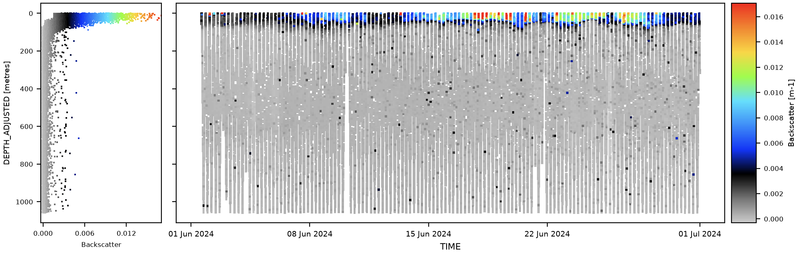
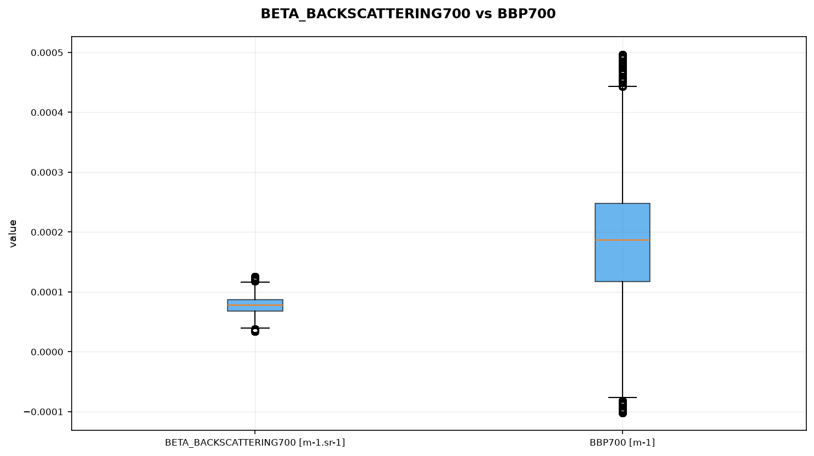
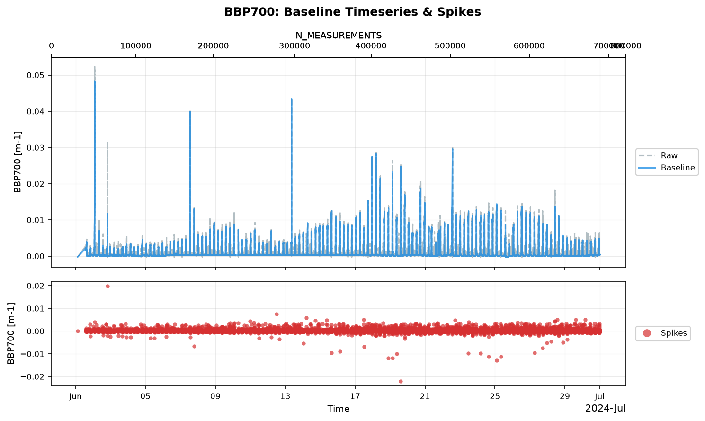

Particulate Backscattering (bbp) Processing#


Overview#
Optical backscattering (bb) is an inherent optical property defined as the limit, as path length approaches zero, of the fraction of light is scattered in a backwards direction, per unit distance traveled through the water. It is a fundamental inherent optical property of seawater, critical to ocean color, and important for visibility and light penetration in the ocean. Particulate optical backscattering (bbp), is the backscattering by particulate matter. As measured by autonomous oceanographic platforms, (bbp) provides a proxy for particle concentration and size. In the open ocean, at low inorganic particle concentrations, it is a useful proxy for particulate organic carbon (POC) concentration and and is a required optical reference for several of the non-photochemical quenching (NPQ) correction methods used in chlorophyll-a processing. Raw backscattering sensors measure the volume scattering function at a single angle and wavelength (beta, in m-1 sr-1), which must be converted to the particulate backscattering coefficient (bbp, in m-1) and separated from isolated spikes before it can be interpreted or used downstream.
pelagos-py implements a short, focused backscatter processing workflow that combines generic quality-control algorithms with a variable-specific physical conversion and despiking step. Unlike chlorophyll, backscatter cannot be dark corrected in situ, so factory dark values are used by default without adjustment. bbp is processed once, early in the pipeline, and its despiked baseline is then consumed as an input by several chlorophyll NPQ correction methods (see 4. Use in chlorophyll NPQ correction and the Chlorophyll-a Processing documentation).
The backscatter processing workflow consists of three sequential stages:
Initial quality control — applies the generic Range QC and Stuck Value QC modules to the raw sensor signal to identify grossly implausible or frozen readings. Deliberately, no spike test is applied at this stage: backscatter spikes correspond to real particles or aggregates rather than sensor artefacts, and are separated out (not discarded) in stage 3.
BBP from Beta — converts the raw volume scattering function (beta, m-1 sr-1) to the particulate backscattering coefficient (bbp, m-1) using the pure-seawater scattering model of Zhang et al. (2009) and the chi-factor scaling of Sullivan et al. (2013). Note that Zhang et al. (2009) has been superceded by Hu et al. (2019), which adds a small pressure effect, so this should eventually be changed.
Isolate BBP Spikes — applies a despiking routine (following Briggs et al., 2011) directly to bbp to separate a smooth baseline from isolated spikes, producing
<var>_BASELINEand<var>_SPIKES. The baseline is the variable subsequently used as the optical reference by chlorophyll NPQ correction methods.
Each processing stage is described in detail below, including the default pelagos-py configuration, the physical/scientific rationale, and implementation details that depart from the equivalent chlorophyll processing steps.
1. Initial quality control#
Backscatter QC is performed with the same generic Range QC and Stuck Value QC modules used elsewhere in pelagos-py (see the Quality Control documentation for the full algorithm descriptions). Unlike the chlorophyll initial range test, these QC steps have no code-level defaults of their own — the values below are drawn from pelagos-py’s reference deployment configurations (Churchill, Nelson, ALR) as a documented starting point.
1.1 Range test#
Recommended configuration for open ocean:
qc_settings:
range qc:
variable_ranges:
BETA_BACKSCATTERING700: # or BBP700, if the platform already reports beta under that name
3: [0, 0.01, outside] # Negative = dark-offset noise, high = suspect
4: [-1.0e-4, 0.05, outside] # Physically absurd / sensor rail
Backscatter cannot physically be negative, but a small negative reading is typically dark-offset noise in clear water rather than a hardware fault, so values just below zero are only flagged probably bad (3). The wider band (4) catches values far enough out to be physically absurd or indicative of a sensor rail. Some platforms (e.g. Nelson) report beta directly under the BBP700 name rather than a separate BETA_BACKSCATTERING700 variable; the range test is applied to whichever variable holds the raw signal, and the BBP from Beta step (Section 2) carries the resulting flags across to the converted variable.
1.2 Stuck value test#
Recommended configuration:
qc_settings:
stuck value qc:
variables:
BETA_BACKSCATTERING700: 3
A frozen reading (four or more identical consecutive values, using the recommended threshold of 3) indicates a dead or fouled sensor and is flagged bad (4).
1.3 No spike test#
Deliberately, no Spike QC test is applied to the raw backscatter signal. Large isolated spikes in bbp typically correspond to individual particles or aggregates passing through the sensor’s sample volume — genuine signal rather than sensor noise. Discarding them via a generic spike test would remove real information; instead, the Isolate BBP Spikes step (Section 3) separates the spike component from the baseline so that both are retained as independent variables.
2. BBP from Beta#
2.1 Physical basis#
The conversion follows the BGC-Argo definition of particulate backscattering, using Zhang et al. (2009) for the pure-seawater scattering contribution (via glidertools.flo_functions.flo_zhang_scatter_coeffs) and Sullivan et al. (2013) for the particulate chi-factor scaling.
The raw sensor measures the volume scattering function at the instrument’s effective scattering angle \(\theta\) and wavelength \(\lambda\):
the sum of a theoretical seawater-only contribution \(\beta_{sw}\) and the contribution of particles \(\beta_p\).
Seawater scattering. \(\beta_{sw}(\theta,\lambda)\) and the total (forward + backward) seawater scattering coefficient \(b_{sw}(\lambda)\) are computed from in-situ temperature and practical salinity following the Zhang et al. (2009) pure-seawater model, which combines scattering due to density fluctuations and due to salt-concentration fluctuations, each weighted by a depolarisation-ratio correction (\(\delta = 0.039\)).
Particulate scattering. The particulate contribution at the measurement angle is obtained by subtraction,
and scaled to the particulate backscattering coefficient (integrated over all backward angles) using the chi factor \(\chi\):
Output. The value written to the dataset is the particulate backscattering coefficient \(b_{bp}(\lambda)\) above, with units of m-1.
2.2 Default configuration#
- name: "BBP from Beta"
parameters:
apply_to: BETA_BACKSCATTERING700
output_as: BBP700
theta: 124
xfactor: 1.076
diagnostics: false
theta (124°) and xfactor (1.076) are the effective scattering angle and chi factor for a three-channel WET Labs ECO-BB3-type instrument (Sullivan et al., 2013, Table 6.2b). Two-channel ECO instruments (e.g. FLBB, FLNTU) use a different geometry — an effective angle of 140° and a chi factor of 1.096 — and theta/xfactor should be adjusted accordingly for those sensors.
apply_to defaults to BETA_BACKSCATTERING700 and output_as to BBP700, so the step writes a new variable. Platforms that report beta under the BBP700 name can set both to BBP700, in which case the step overwrites its input in place — see the implementation note below.
Note — wavelength is not a configurable parameter
Although the step is named for the 700 nm channel and the default output is
BBP700, the wavelength passed into the underlying seawater-scattering calculation is hard-coded to 700 nm in the current implementation, independent of theapply_to/output_asvariable names. Using this step to derive a variable at a different wavelength (e.g. a 532 nm channel) would apply the 700 nm seawater-scattering correction rather than one calculated for that channel’s actual wavelength.
2.3 Implementation notes#
Required inputs:
TIME,TEMP,PSAL,DEPTHand the beta variable named byapply_to;_ADJUSTEDversions are used where available.TEMPandPSALare interpolated in time onto the beta rows for the calculation only (not saved), skipping samples flagged3,4or9. Where no value can be interpolated, bbp is not derived and the output is flagged missing (9).QC flag filtering: unlike the Isolate BBP Spikes step (Section 3) and the generic
deep_correctionstep, BBP from Beta does not automatically exclude samples carrying bad/probably-bad/missing QC flags (3,4,9) from the conversion — every finiteapply_tovalue is converted regardless of its QC flag, unless the user explicitly configuresqc_handling_settingsto NaN-out flagged beta first. Flags on the input are still carried across to the output’s QC viagenerate_qc, so a flagged input value converts to a flagged output value; the flag simply does not prevent the arithmetic conversion itself.In-place overwrite: if
apply_toandoutput_asare the same, the QC for the output variable is not regenerated — the pre-existing_QCarray is left untouched and a warning is logged. This means that, for platforms using an in-place configuration, any new missing (9) flags arising fromTEMP/PSALgaps during the conversion are not automatically reflected inBBP700_QCunlessoutput_asis set to a distinct variable name.DEPTH is never modified by this step, consistent with its treatment throughout the pipeline.
2.4 Figure#


Box plot comparing the value distribution of the raw beta input and the converted bbp output.#
3. Isolate BBP Spikes#
3.1 Principle#
Following conversion, pelagos-py separates each bbp record into a smooth baseline and an isolated-spike component using a rolling-window filter. The implementation (glidertools.cleaning.despike) follows Briggs et al. (2011), and offers two filter methods:
median(default) — a rolling median is applied directly to the record; this forms the baseline, and the spike component is the residual (measurement − baseline), which can be positive or negative.minmax— a rolling minimum is applied first, followed by a rolling maximum of that result, forming a baseline that tracks the lower envelope of the signal; spikes under this method are strictly positive or zero, consistent with backscatter spikes being interpreted as discrete particles adding to a background baseline, but instrument noise will add a positive bias to the spike signal.
Both the baseline and spike components are retained as independent output variables; neither is discarded.
3.2 Default configuration#
- name: "Isolate BBP Spikes"
parameters:
apply_to: BBP700
window_size: 7
method: median
diagnostics: true
window_size: 7 follows the 7-point rolling filter of Briggs et al. (2011), counted over valid (non-flagged) points. A larger window is a deliberate tuning choice, depending on the sensor’s sampling rate and the platform’s vertical speed.
3.3 QC filtering and missing-value propagation#
Unlike BBP from Beta (Section 2.3), Isolate BBP Spikes does exclude flagged samples from the despike calculation by default: samples carrying QC flags 3, 4 or 9 on apply_to are masked to NaN before the rolling filter is applied, so a flagged (e.g. biofouled) stretch cannot drag down the rolling baseline computed for an isolated good sample nearby. Samples excluded this way receive no baseline or spike value at all (both NaN), and are flagged missing (9) in the corresponding _BASELINE_QC/_SPIKES_QC outputs — this differs from steps such as deep_correction, where excluded samples are still corrected even though they do not inform the correction. A gap left this way in the baseline is not filled by this step; an Interpolate Data step run afterward on <var>_BASELINE produces a gap-free baseline for downstream use (e.g. by the chlorophyll NPQ methods that require a continuous backscatter reference).
3.4 Figure#


Raw bbp time series with the despiked baseline overlaid (top panel), and the isolated spike component (bottom panel).#
4. Use in chlorophyll NPQ correction#
bbp does not receive a dedicated correction analogous to chlorophyll’s deep-offset or NPQ corrections. Instead, the despiked baseline produced in Section 3 is consumed as the optical reference by several of the chlorophyll NPQ correction methods (Sackmann et al., 2008; Swart et al., 2015; Hemsley et al., 2015; Thomalla et al., 2018; Mitchell et al., 2024; Xing et al., 2018; Terrats et al., 2020), under the assumption that non-photochemical quenching alters chlorophyll fluorescence yield without substantially affecting particulate backscattering.
When a backscatter-based NPQ method is configured without an explicit bbp_var, pelagos-py searches for a usable backscatter variable in the following order:
BBP700_BASELINE;BBP700;BBP532_BASELINE; andBBP532.
A despiked baseline product (_BASELINE) is preferred over the raw/undespiked variable because isolated spikes or unrealistically small backscatter values can produce artificially large fluorescence-to-backscatter ratios and consequently overestimate the reconstructed chlorophyll fluorescence.
Full descriptions of the individual NPQ correction methods, their assumptions, and the shared implementation rules governing how backscatter is used within them, are documented in the Chlorophyll-a Processing documentation (pelagos-py_CHLA.md), Section 5.
5. Outputs#
The backscatter processing workflow produces or updates the following variables:
Variable |
Description |
|---|---|
|
Raw volume scattering function in m-1 sr-1, measured at the sensor’s effective angle and wavelength. This is the native measurement used as the input to the BBP from Beta conversion. |
|
Quality-control flags associated with the raw signal, including the results of the initial range and stuck-value tests. |
|
Particulate backscattering coefficient in m-1, derived from the raw signal using the Zhang et al. (2009) seawater-scattering model and the Sullivan et al. (2013) chi-factor scaling. See the note in Section 2.1 regarding the seawater contribution retained in this value. |
|
Quality-control flags associated with |
|
Despiked baseline backscatter signal, produced by the Isolate BBP Spikes step. This is the variable most commonly consumed by the backscatter-based chlorophyll NPQ correction methods. |
|
Backscatter spike component separated from the baseline, retained independently as it represents discrete particle/aggregate signal rather than an artefact. |
|
Quality-control flags associated with the baseline and spike products, inherited from |
6. Recommended reporting#
A scientific methods section describing backscatter processing with pelagos-py should report:
the raw signal variable and its initial range- and stuck-value-test thresholds;
that no spike test was applied to the raw signal, and why (spikes are treated as real particulate signal);
the effective scattering angle (
theta) and chi factor (xfactor) used for the beta-to-bbp conversion, and the sensor model/geometry they correspond to;the despiking window size and method (median or minmax) used to separate the baseline and spike components; and
which backscatter variable (raw, or despiked baseline) was used as the optical reference for any chlorophyll NPQ correction applied.
An example methods description is given below.
Particulate backscattering was processed using pelagos-py. The raw volume scattering function (
BETA_BACKSCATTERING700, m-1 sr-1) was screened using a range test, with values outside 0 to 0.01 m-1 sr-1 flagged probably bad and values outside -1.0 × 10-4 to 0.05 m-1 sr-1 flagged bad, together with a stuck-value test flagging four or more identical consecutive readings as bad. No spike test was applied to the raw signal, as backscatter spikes were considered to represent genuine particulate/aggregate signal rather than sensor artefacts.The raw signal was converted to the particulate backscattering coefficient at 700 nm (
BBP700, m-1) following the pure-seawater scattering model of Zhang et al. (2009) and the chi-factor scaling of Sullivan et al. (2013), using an effective scattering angle of 124° and a chi factor of 1.076, appropriate for a three-channel WET Labs ECO-type instrument. The converted signal was subsequently despiked using a centred rolling-median filter of 7 observations following Briggs et al. (2011), producing a despiked baseline (BBP700_BASELINE) and an isolated spike component (BBP700_SPIKES). The despiked baseline was used as the optical reference for chlorophyll non-photochemical quenching correction.
References#
Briggs, N., Perry, M. J., Cetinić, I., Lee, C., D’Asaro, E., Gray, A. M., & Rehm, E. (2011). High-resolution observations of aggregate flux during a sub-polar North Atlantic spring bloom. Deep-Sea Research Part I, 58(10), 1031–1039. https://doi.org/10.1016/j.dsr.2011.07.007
Sullivan, J.M., Twardowski, M.S., Zaneveld, J.R.V., & Moore, C.C. (2013). Measuring optical backscattering in water. Chapter 6 in Light Scattering Reviews 7: Radiative Transfer and Optical Properties of Atmosphere and Underlying Surface, pp 189–224.
Zhang, X., Hu, L., & He, M.-X. (2009). Scattering by pure seawater: Effect of salinity. Optics Express, 17(7), 5698–5710. https://doi.org/10.1364/OE.17.005698
OOI (2012). Data Product Specification for Optical Backscatter (Red Wavelengths). Document Control Number 1341-00540 (version 1-05).
Full references for the chlorophyll NPQ correction methods that consume bbp as an optical reference (Sackmann et al., 2008; Swart et al., 2015; Hemsley et al., 2015; Thomalla et al., 2018; Mitchell et al., 2024; Xing et al., 2018; Terrats et al., 2020) are listed in the Chlorophyll-a Processing documentation.